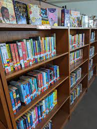
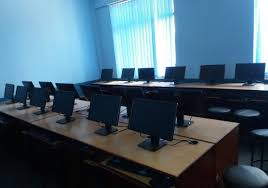
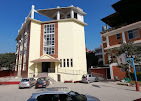
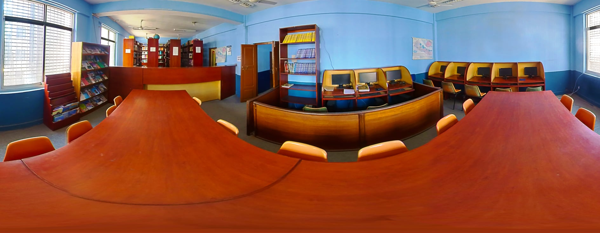
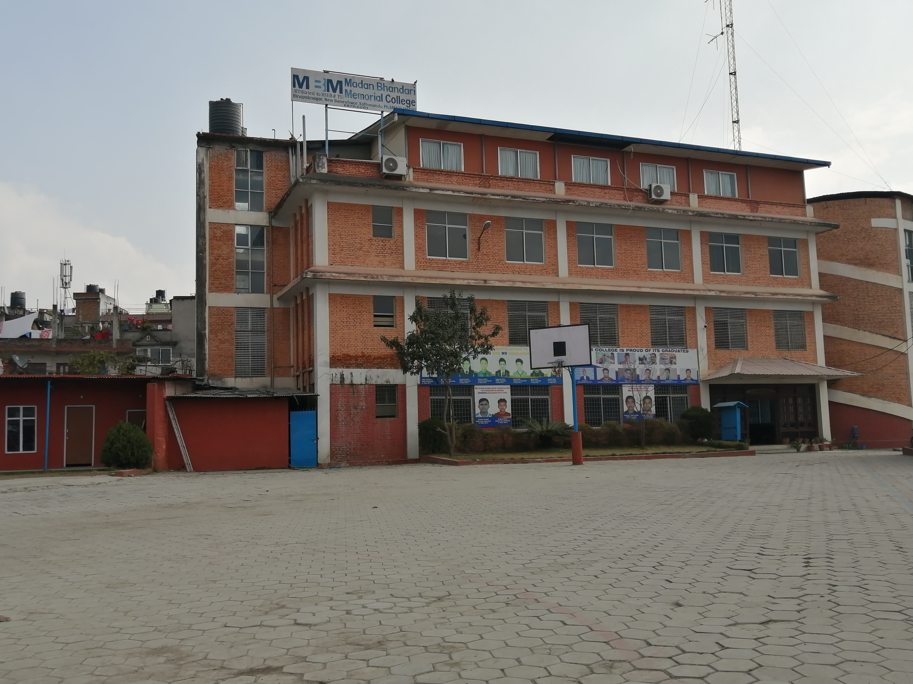

In order to impart knowledge in the area of information and technology, the College has established 9 well-equipped laboratories of science, computer, management, journalism, and information technology. The college has more than 169 computers, 10 large TV screens, and 11 printers to facilitate the teaching-learning and to support the administrative activities.To support the security measures, the college classrooms and premises are equipped with closed-circuit television (CCTV) system.

The college has an excellent library containing 16000 books, magazines, and journals. The library has an excellent digital database and high-speed internet connectivity to facilitate the students and research scholars.

In order to impart knowledge in the area of information and technology, the College has established 9 well-equipped laboratories of science, computer, management, journalism, and information technology. The college has more than 169 computers, 10 large TV screens, and 11 printers to facilitate the teaching-learning and to support the administrative activities.To support the security measures, the college classrooms and premises are equipped with closed-circuit television (CCTV) system.

Madan Bhandari Memorial College owns five buildings on more than 6.5 ropanis of land with more than 40 well-furnished rooms for conducting the teaching-learning activities.

For the purpose of pedagogical activities, we have well-equipped and well-furnished classrooms. We have a total of 250 desks and benches, 400 chairs, and 30 cabinets for office purposes.

The college has a large playground for different sporting activities; it can also be used for organizing assemblies and public events.
We give appropriate emphasis on extra-curricular activities (ECA) such as excursions, education tours, and sporting events. Every year, the college organizes sports events for all students with a number of different sporting events.
For ensuring uninterrupted teaching-learning activities, the college has installed two electricity generators: one 50KVA and another 5 KVA. In addition, the college also has installed large batteries with inverters to support the radio transmission and office computer systems
The college owns a radio station named Radio Shweta Shardul 93.6 MHz which is being aired from the college premises. The radio can be heard in the Kathmandu valley and its vicinity. The radio station has its own production studio, control room, and radio tower.The radio station is mainly used for disseminating news, views, and entertainment programs. The radio has downlink agreements with national and international radio stations. National agreements are particularly with community radio networks; as for international,BBC Nepali Service is broadcast through this radio station.
The college has a well-furnished auditorium with more than 150 conference seats. The college with the grant assistance of the University Grants Commission has established a Research Management Cell to facilitate research activities. The classrooms are also equipped with modern teaching aids. There are 15 multimedia projectors for such purposes.
We provide clean and jarred drinking water to our students, faculties and staff members.
The college building is purposefully constructed for teaching-learning activities. Obviously, each of the stories of college building consists of sufficient and clean toilets, separately for boys and girls. The constant supply of water to each of the toilets is provided.
The college is connected with a metaled road on the Dhobi Khola corridor and public transportation is easily accessible. In addition, the college owns a bus for transporting students and a van for office purposes.